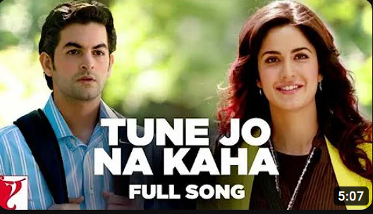
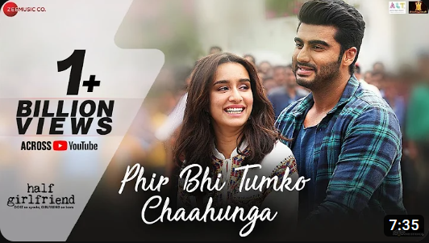
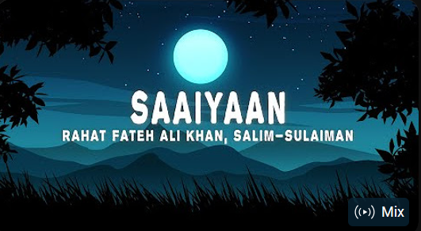

"Piya Aaye Na" Aashiqui 2 Full Song with Lyrics | Aditya Roy
Shraddha Kapoor

THE INDIAN SONGS
120m subscribers
130M views 10 years ago Most Romantic Songs üíò | T-Series Non Stop Love-Mixüé∂üíó | Feeling of First Love üòç
Presenting the lyrical song "Piya Aaye Na" from movie "Aashiqui 2", a movie produced by T-Series Films & Vishesh Films, starring Aditya Roy Kapur, Shraddha Kapoor in voice of KK , Tulsi Kumar
…more
13,867 Comments

Add a comment...

@priyanshumodi
3 month ago
heart touching song
1kreply
@shraddaadavkar
1 month ago
fav movie fav song
220reply
@rahulbau
3 month ago
fav...
3kreply

@sonikarishma
4 month ago
sab jhute jhute wade the unke this lines hits me
11reply

@priyayadav
7 month ago
kon kon insta se sun kar aya hai
88